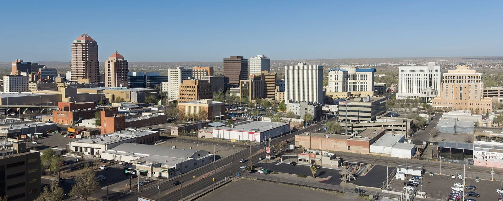

NM · Mattress & couch disposal
How to get rid of a mattress or couch in Albuquerque, NM
Photo: “Albuquerque, New Mexico skyline” by Quintin Soloviev, CC BY 4.0, via Wikimedia Commons. Cropped; shown with a teal overlay.

At a glance
- Cost
- Free curb pickup when you ask for one
- How to book
- Online form or 311, at least 24 hours before your next trash day
- Pickup day
- Your next normal trash day
- Limits
- About one standard pickup-truck load
- Drop-off
- $5.00 per load plus tax at 3 city Convenience Centers (residents)
City pickup and drop-off rules
Free curb pickup
The city says large items, including furniture like a couch, chair, mattress or bed frame, are collected free of charge when a residential customer asks for a pickup (Albuquerque Solid Waste).
How to book
To book, use the city's online form on that page or call 311 (505-768-2000). Ask at least 24 hours before your next trash day. Pickup happens on your next normal trash collection day.
More details
Requests made less than 24 hours ahead may be handled case by case.
Setting it out
Set items at the curb at least five feet away from carts, mailboxes, fire hydrants, parked cars, low trees and utility poles so the truck can reach them. No more than a standard pickup-truck load is collected, and contaminated items will not be picked up.
Drop-off for a small fee
City residents can take large items to any of the city's three Convenience Centers for $5.00 per load plus tax, with proof of residency such as a utility bill or driver's license. Non-residents pay $12.00 per load. An untarped or unsecured load costs extra ($10.54 total for residents), so tie down and cover your load (trash drop-off; 2026 fee and rule changes).
Convenience Center locations
Locations from the city's list: Eagle Rock, 6301 Eagle Rock NE (505-768-3925, open 7 days, 8 a.m. to 5 p.m.); Don Reservoir, 117 114th SW (505-768-3920, open 7 days, 8 a.m. to 5 p.m.); and Montessa Park, 3512 Los Picaros SE (505-768-3930, Friday to Sunday, 8 a.m. to 5 p.m.). No vehicles are let in after 4:30 p.m. Holiday hours differ, so check the city's page before you go on a holiday.
Mattress limit
No more than 3 mattresses per load at a Convenience Center. More than that must go to the Cerro Colorado Landfill. One load is a 4 by 8 foot truck bed or trailer filled 2 feet high.
Questions
Not sure if something is accepted? Check with the city by calling 311 (505-768-2000).
Anything not listed here: check with the city. We only list rules we could confirm on an official page.
Official source: City of Albuquerque Solid Waste Management Department
Last checked: 2026-11-01
Still in good shape? Donate it
If your couch or mattress is clean and in good shape, giving it away helps a neighbor and keeps it out of the landfill.
- Offer it free to neighbors (Buy Nothing groups, Nextdoor, Facebook Marketplace, Craigslist "free").
- Call a local thrift store, church, shelter, or furniture bank. Ask if they take it and if they pick up.
- Call first. Many charities do not take used mattresses.
Hiring a hauler instead
If the city cannot help, you can hire a licensed hauler. Ask for a written price first. Never pay someone who might dump it illegally.